Chapter 1: An Invisible World¶
Introduction¶
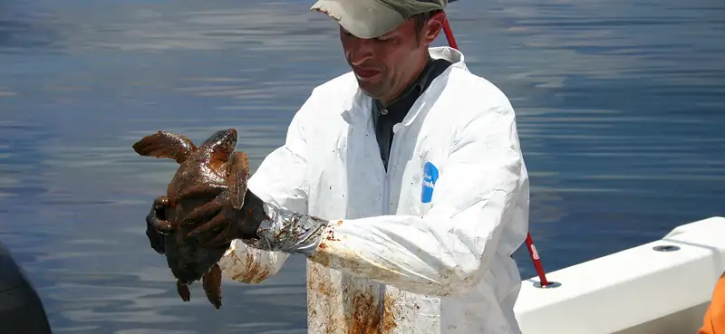
From boiling thermal hot springs to deep beneath the Antarctic ice, microorganisms can be found almost everywhere on earth in great quantities. Microorganisms (or microbes, as they are also called) are small organisms. Most are so small that they cannot be seen without a microscope.
Most microorganisms are harmless to humans and, in fact, many are helpful. They play fundamental roles in ecosystems everywhere on earth, forming the backbone of many food webs. People use them to make biofuels, medicines, and even foods. Without microbes, there would be no bread, cheese, or beer. Our bodies are filled with microbes, and our skin alone is home to trillions of them.1 Some of them we can’t live without; others cause diseases that can make us sick or even kill us.
Although much more is known today about microbial life than ever before, the vast majority of this invisible world remains unexplored. Microbiologists continue to identify new ways that microbes benefit and threaten humans.
1.1 What Our Ancestors Knew¶
Learning Objectives
By the end of this section, you will be able to:
- Describe how our ancestors improved food with the use of invisible microbes
- Describe how the causes of sickness and disease were explained in ancient times, prior to the invention of the microscope
- Describe key historical events associated with the birth of microbiology
Clinical Focus: Part 1
Cora, a 41-year-old lawyer and mother of two, has recently been experiencing severe headaches, a high fever, and a stiff neck. Her husband, who has accompanied Cora to see a doctor, reports that Cora also seems confused at times and unusually drowsy. Based on these symptoms, the doctor suspects that Cora may have meningitis, a potentially life-threatening infection of the tissue that surrounds the brain and spinal cord.
Meningitis has several potential causes. It can be brought on by bacteria, fungi, viruses, or even a reaction to medication or exposure to heavy metals. Although people with viral meningitis usually heal on their own, bacterial and fungal meningitis are quite serious and require treatment.
Cora’s doctor orders a lumbar puncture (spinal tap) to take three samples of cerebrospinal fluid (CSF) from around the spinal cord (Figure 1.2). The samples will be sent to laboratories in three different departments for testing: clinical chemistry, microbiology, and hematology. The samples will first be visually examined to determine whether the CSF is abnormally colored or cloudy; then the CSF will be examined under a microscope to see if it contains a normal number of red and white blood cells and to check for any abnormal cell types. In the microbiology lab, the specimen will be centrifuged to concentrate any cells in a sediment; this sediment will be smeared on a slide and stained with a Gram stain. Gram staining is a procedure used to differentiate between two different types of bacteria (gram-positive and gram-negative).
About 80% of patients with bacterial meningitis will show bacteria in their CSF with a Gram stain.2 Cora’s Gram stain did not show any bacteria, but her doctor decides to prescribe her antibiotics just in case. Part of the CSF sample will be cultured—put in special dishes to see if bacteria or fungi will grow. It takes some time for most microorganisms to reproduce in sufficient quantities to be detected and analyzed.
- What types of microorganisms would be killed by antibiotic treatment?
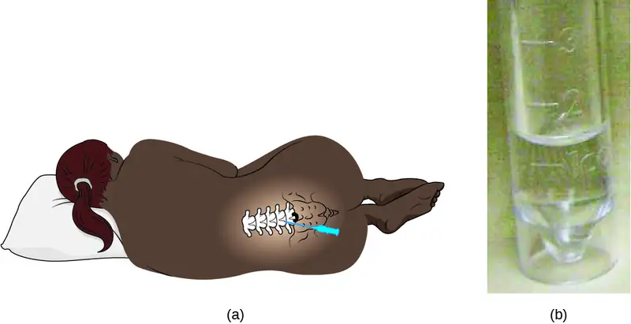
Jump to the next Clinical Focus box.
Most people today, even those who know very little about microbiology, are familiar with the concept of microbes, or “germs,” and their role in human health. Schoolchildren learn about bacteria, viruses, and other microorganisms, and many even view specimens under a microscope. But a few hundred years ago, before the invention of the microscope, the existence of many types of microbes was impossible to prove. By definition, microorganisms, or microbes, are very small organisms; many types of microbes are too small to see without a microscope, although some parasites and fungi are visible to the naked eye.
Humans have been living with—and using—microorganisms for much longer than they have been able to see them. Historical evidence suggests that humans have had some notion of microbial life since prehistoric times and have used that knowledge to develop foods as well as prevent and treat disease. In this section, we will explore some of the historical applications of microbiology as well as the early beginnings of microbiology as a science.
Fermented Foods and Beverages¶
People across the world have enjoyed fermented foods and beverages like beer, wine, bread, yogurt, cheese, and pickled vegetables for all of recorded history. Discoveries from several archeological sites suggest that even prehistoric people took advantage of fermentation to preserve and enhance the taste of food. Archaeologists studying pottery jars from a Neolithic village in China found that people were making a fermented beverage from rice, honey, and fruit as early as 7000 BC.3
Production of these foods and beverages requires microbial fermentation, a process that uses bacteria, mold, or yeast to convert sugars (carbohydrates) to alcohol, gases, and organic acids (Figure 1.3). While it is likely that people first learned about fermentation by accident—perhaps by drinking old milk that had curdled or old grape juice that had fermented—they later learned to harness the power of fermentation to make products like bread, cheese, and wine.
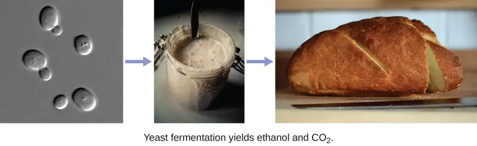
The Iceman and Evidence of Early Treatments¶
Prehistoric humans had a very limited understanding of the causes of disease, and various cultures developed different beliefs and explanations. While many believed that illness was punishment for angering the gods or was simply the result of fate, archaeological evidence suggests that prehistoric people attempted to treat illnesses and infections. One example of this is Ötzi the Iceman, a 5300-year-old mummy found frozen in the ice of the Ötzal Alps on the Austrian-Italian border in 1991. Because Ötzi was so well preserved by the ice, researchers discovered that he was infected with the eggs of the parasite Trichuris trichiura, which may have caused him to have abdominal pain and anemia. Researchers also found evidence of Borrelia burgdorferi, a bacterium that causes Lyme disease.4 Some researchers think Ötzi may have been trying to treat his infections with the woody fruit of the Fomitopsis betulinus fungus, which was discovered tied to his belongings. This fungus has both laxative and antibiotic properties. Ötzi was also covered in tattoos that were made by cutting incisions into his skin, filling them with herbs, and then burning the herbs.5 There is speculation that this may have been another attempt to treat his health ailments.
Early Notions of Disease, Contagion, and Containment¶
Several ancient civilizations appear to have had some understanding that disease could be transmitted by things they could not see. This is especially evident in historical attempts to contain the spread of disease. For example, the Bible refers to the practice of quarantining people with leprosy and other diseases, suggesting that people understood that diseases could be communicable. Ironically, while leprosy is communicable, it is also a disease that progresses slowly. This means that people were likely quarantined after they had already spread the disease to others.
Clean water and sanitation are among the most important elements of healthy societies. The earliest examples of urban sanitation systems are from the ancient Indus Valley Civilization cities of Mohenjo-daro and Harappa, located in current-day Pakistan. Constructed in 2500 BCE (about 4,500 years ago), the cities had complex networks of wells, baths, and drainage systems that stored fresh water and carried waste away. About two thousand years later, people in the ancient Greek civilization attributed disease to bad air, mal’aria, which they called “miasmatic odors.” They developed hygiene practices that built on this idea. In Rome, they built aqueducts, which brought fresh water into the city, and a giant sewer, the Cloaca Maxima, which carried waste away and into the river Tiber (Figure 1.4). Some researchers believe that this infrastructure helped protect the Romans from epidemics of waterborne illnesses.
![Figure a is a map of a city containing a stadium, forum, and other structures. Running through the center of the city is a red line. Figure b is a photograph of a corner of a room. There is a trough between the walls and the floor. This trough is covered with stone benches that have large holes (as for a toilet) in the bench. The holes span the top and front of the bench. There are six holes visible in the bench that runs along one side of the image and two more in the bench along the other side. The image does not show the entire room so there are likely more available spots in this room.](img/osc-microbio-01-01-cloaca.webp)
Even before the invention of the microscope, some doctors, philosophers, and scientists made great strides in understanding the invisible forces—what we now know as microbes—that can cause infection, disease, and death.
The Greek physician Hippocrates (460–370 BC) is considered the “father of Western medicine” (Figure 1.5). Unlike many of his ancestors and contemporaries, he dismissed the idea that disease was caused by supernatural forces. Instead, he posited that diseases had natural causes from within patients or their environments. Hippocrates and his heirs are believed to have written the Hippocratic Corpus, a collection of texts that make up some of the oldest surviving medical books.6 Hippocrates is also often credited as the author of the Hippocratic Oath, taken by new physicians to pledge their dedication to diagnosing and treating patients without causing harm.
While Hippocrates is considered the father of Western medicine, the Greek philosopher and historian Thucydides (460–395 BC) is considered the father of scientific history because he advocated for evidence-based analysis of cause-and-effect reasoning (Figure 1.5). Among his most important contributions are his observations regarding the Athenian plague that killed one-third of the population of Athens between 430 and 410 BC. Having survived the epidemic himself, Thucydides made the important observation that survivors did not get re-infected with the disease, even when taking care of actively sick people.7 This observation shows an early understanding of the concept of immunity.
Marcus Terentius Varro (116–27 BC) was a prolific Roman writer who was one of the first people to propose the concept that things we cannot see (what we now call microorganisms) can cause disease (Figure 1.5). In Res Rusticae (On Farming), published in 36 BC, he said that “precautions must also be taken in neighborhood swamps
. . . because certain minute creatures [animalia minuta] grow there which cannot be seen by the eye, which float in the air and enter the body through the mouth and nose and there cause serious diseases.”8
Centuries later, Islamic scholars, mainly in Persia, built on the knowledge from Hippocrates as well as from Chinese and Indian medicine. Foremost among them was Abū Bakr al-Rāzī, usually refered to as al-Razi or by his Latinized name, Rhazes. He developed a range of experimental methods to test various aspects of medicine. For example, to select a location for a hospital, al-Razi hung raw meat around the city, and located the facility in the place where the meat took the longest to rot. He also was the first to distinguish measles and smallpox, and undertook experiments to determine which available treatments were most effective for each. While al-Razi did not have the technology to understand the role of microbes, his efforts to identify the causes of illnesses, rather than solely focusing on the symptoms, were highly influential.
Islamic physicians created one of the most important medical texts in history, the Canon of Medicine (Arabic: al-Qānūn fī al-Ṭibb). Compiled in 1025 by physician and philosopher Ibn Sina (often referred to as Avicenna), the encyclopedia included detailed descriptions of the parts of the body, a detailed account of over 800 medicinal substances, and pathologies of several illnesses organized by body part or health event. In the work, Ibn Sina described mechanisms of contagion, indicated that organisms could be infected by foreign substances, and that illness could be transmitted by breath. He is also credited with advancing the practice of isolating people who are sick, laying the foundation for historical and contemporary quarantine methods. The Canon was translated into many languages, and was a primary resource for teaching medicine around the world, through the Renaissance and beyond.
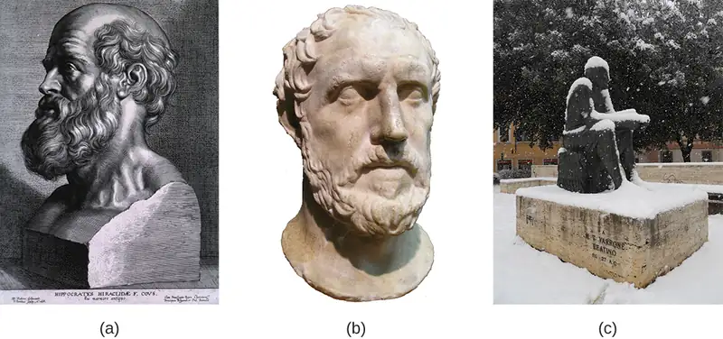
Check Your Understanding
- Give two examples of foods that have historically been produced by humans with the aid of microbes.
- Explain how historical understandings of disease contributed to attempts to treat and contain disease.
The Birth of Microbiology¶
While the ancients may have suspected the existence of invisible “minute creatures,” it wasn’t until the invention of the microscope that their existence was definitively confirmed. While it is unclear who exactly invented the microscope, a Dutch cloth merchant named Antonie van Leeuwenhoek (1632–1723) was the first to develop a lens powerful enough to view microbes. In 1675, using a simple but powerful microscope, Leeuwenhoek was able to observe single-celled organisms, which he described as “animalcules” or “wee little beasties,” swimming in a drop of rain water. From his drawings of these little organisms, we now know he was looking at bacteria and protists. (We will explore Leeuwenhoek’s contributions to microscopy further in How We See the Invisible World.)
Nearly 200 years after van Leeuwenhoek got his first glimpse of microbes, the “Golden Age of Microbiology” spawned a host of new discoveries between 1857 and 1914. Two famous microbiologists, Louis Pasteur and Robert Koch, were especially active in advancing our understanding of the unseen world of microbes (Figure 1.6). Pasteur, a French chemist, showed that individual microbial strains had unique properties and demonstrated that fermentation is caused by microorganisms. He also invented pasteurization, a process used to kill microorganisms responsible for spoilage, and developed vaccines for the treatment of diseases, including rabies, in animals and humans. Koch, a German physician, was the first to demonstrate the connection between a single, isolated microbe and a known human disease. For example, he discovered the bacteria that cause anthrax (Bacillus anthracis), cholera (Vibrio cholera), and tuberculosis (Mycobacterium tuberculosis).9 We will discuss these famous microbiologists, and others, in later chapters.
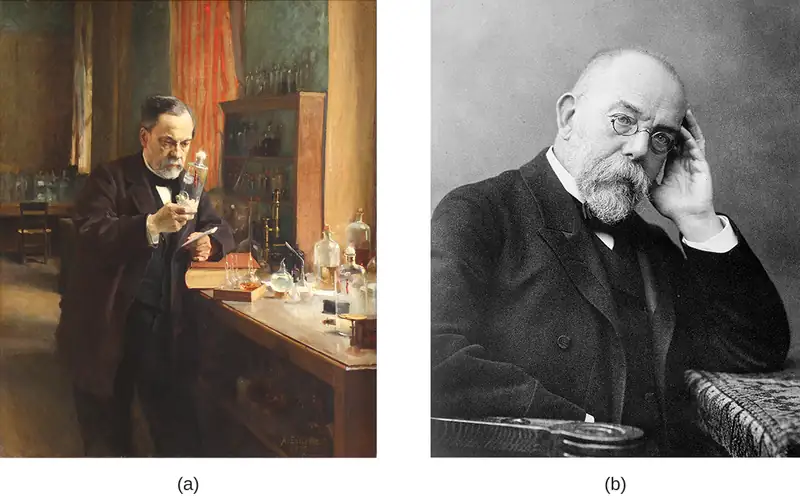
As microbiology has developed, it has allowed the broader discipline of biology to grow and flourish in previously unimagined ways. Much of what we know about human cells comes from our understanding of microbes, and many of the tools we use today to study cells and their genetics derive from work with microbes.
Check Your Understanding
- How did the discovery of microbes change human understanding of disease?
Micro Connections: Microbiology Toolbox
Because individual microbes are generally too small to be seen with the naked eye, the science of microbiology is dependent on technology that can artificially enhance the capacity of our natural senses of perception. Early microbiologists like Pasteur and Koch had fewer tools at their disposal than are found in modern laboratories, making their discoveries and innovations that much more impressive. Later chapters of this text will explore many applications of technology in depth, but for now, here is a brief overview of some of the fundamental tools of the microbiology lab.
- Microscopes produce magnified images of microorganisms, human cells and tissues, and many other types of specimens too small to be observed with the naked eye.
- Stains and dyes are used to add color to microbes so they can be better observed under a microscope. Some dyes can be used on living microbes, whereas others require that the specimens be fixed with chemicals or heat before staining. Some stains only work on certain types of microbes because of differences in their cellular chemical composition.
- Growth media are used to grow microorganisms in a lab setting. Some media are liquids; others are more solid or gel-like. A growth medium provides nutrients, including water, various salts, a source of carbon (like glucose), and a source of nitrogen and amino acids (like yeast extract) so microorganisms can grow and reproduce. Ingredients in a growth medium can be modified to grow unique types of microorganisms.
- A Petri dish is a flat-lidded dish that is typically 10–11 centimeters (cm) in diameter and 1–1.5 cm high. Petri dishes made out of either plastic or glass are used to hold growth media (Figure 1.7).
- Test tubes are cylindrical plastic or glass tubes with rounded bottoms and open tops. They can be used to grow microbes in broth, or semisolid or solid growth media.
- A Bunsen burner is a metal apparatus that creates a flame that can be used to sterilize pieces of equipment. A rubber tube carries gas (fuel) to the burner. In many labs, Bunsen burners are being phased out in favor of infrared microincinerators, which serve a similar purpose without the safety risks of an open flame.
- An inoculation loop is a handheld tool that ends in a small wire loop (Figure 1.7). The loop can be used to streak microorganisms on agar in a Petri dish or to transfer them from one test tube to another. Before each use, the inoculation loop must be sterilized so cultures do not become contaminated.
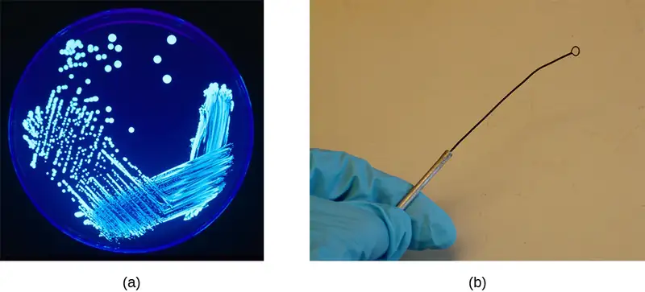
1.2 A Systematic Approach¶
Learning Objectives
By the end of this section, you will be able to:
- Describe how microorganisms are classified and distinguished as unique species
- Compare historical and current systems of taxonomy used to classify microorganisms
Once microbes became visible to humans with the help of microscopes, scientists began to realize their enormous diversity. Microorganisms vary in all sorts of ways, including their size, their appearance, and their rates of reproduction. To study this incredibly diverse new array of organisms, researchers needed a way to systematically organize them.
The Science of Taxonomy¶
Taxonomy is the classification, description, identification, and naming of living organisms. Classification is the practice of organizing organisms into different groups based on their shared characteristics. The most famous early taxonomist was a Swedish botanist, zoologist, and physician named Carolus Linnaeus (1701–1778). In 1735, Linnaeus published Systema Naturae, an 11-page booklet in which he proposed the Linnaean taxonomy, a system of categorizing and naming organisms using a standard format so scientists could discuss organisms using consistent terminology. He continued to revise and add to the book, which grew into multiple volumes (Figure 1.8).
In his taxonomy, Linnaeus divided the natural world into three kingdoms: animal, plant, and mineral (the mineral kingdom was later abandoned). Within the animal and plant kingdoms, he grouped organisms using a hierarchy of increasingly specific levels and sublevels based on their similarities. The names of the levels in Linnaeus’s original taxonomy were kingdom, class, order, family, genus (plural: genera), and species. Species was, and continues to be, the most specific and basic taxonomic unit.
Evolving Trees of Life (Phylogenies)¶
With advances in technology, other scientists gradually made refinements to the Linnaean system and eventually created new systems for classifying organisms. In the 1800s, there was a growing interest in developing taxonomies that took into account the evolutionary relationships, or phylogenies, of all different species of organisms on earth. One way to depict these relationships is via a diagram called a phylogenetic tree (or tree of life). In these diagrams, groups of organisms are arranged by how closely related they are thought to be. In early phylogenetic trees, the relatedness of organisms was inferred by their visible similarities, such as the presence or absence of hair or the number of limbs. Now, the analysis is more complicated. Today, phylogenic analyses include genetic, biochemical, and embryological comparisons, as will be discussed later in this chapter.
Linnaeus’s tree of life contained just two main branches for all living things: the animal and plant kingdoms. In 1866, Ernst Haeckel, a German biologist, philosopher, and physician, proposed another kingdom, Protista, for unicellular organisms (Figure 1.9). He later proposed a fourth kingdom, Monera, for unicellular organisms whose cells lack nuclei, like bacteria.
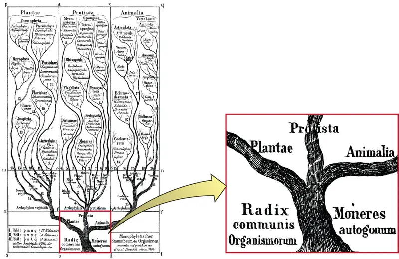
Nearly 100 years later, in 1969, American ecologist Robert Whittaker (1920–1980) proposed adding another kingdom—Fungi—in his tree of life. Whittaker’s tree also contained a level of categorization above the kingdom level—the empire or superkingdom level—to distinguish between organisms that have membrane-bound nuclei in their cells (eukaryotes) and those that do not (prokaryotes). Empire Prokaryota contained just the Kingdom Monera. The Empire Eukaryota contained the other four kingdoms: Fungi, Protista, Plantae, and Animalia. Whittaker’s five-kingdom tree was considered the standard phylogeny for many years.
Figure 1.10 shows how the tree of life has changed over time. Note that viruses are not found in any of these trees. That is because they are not made up of cells and thus it is difficult to determine where they would fit into a tree of life.
![This timeline begins with Carolus Linnaeus who developed a new way to categorize plants and animals in 1758. The image above Linnaeus shows a forked line with one branch labeled plants and the other labeled animals. In 1866, Ernst Haeckel wrote General Morphology of Organisms, proposing four kingdoms. The image above Haeckel shows a central line with Monera branching off the bottom, protists branching off next, then plants and finally animals. In 1969 Robert Whittaker proposed adding a fifth kingdom – fungi – to the tree of life. The image above Whittaker is the same as the one above Haeckel but includes an additional branch labeled fungi between plants and animals.](img/osc-microbio-01-02-treestime.webp)
Check Your Understanding
- Briefly summarize how our evolving understanding of microorganisms has contributed to changes in the way that organisms are classified.
Clinical Focus: Part 2
Antibiotic drugs are specifically designed to kill or inhibit the growth of bacteria. But after a couple of days on antibiotics, Cora shows no signs of improvement. Also, her CSF cultures came back from the lab negative. Since bacteria or fungi were not isolated from Cora’s CSF sample, her doctor rules out bacterial and fungal meningitis. Viral meningitis is still a possibility.
However, Cora now reports some troubling new symptoms. She is starting to have difficulty walking. Her muscle stiffness has spread from her neck to the rest of her body, and her limbs sometimes jerk involuntarily. In addition, Cora’s cognitive symptoms are worsening. At this point, Cora’s doctor becomes very concerned and orders more tests on the CSF samples.
- What types of microorganisms could be causing Cora’s symptoms?
Jump to the next Clinical Focus box. Go back to the previous Clinical Focus box.
The Role of Genetics in Modern Taxonomy¶
Haeckel’s and Whittaker’s trees presented hypotheses about the phylogeny of different organisms based on readily observable characteristics. But the advent of molecular genetics in the late 20th century revealed other ways to organize phylogenetic trees. Genetic methods allow for a standardized way to compare all living organisms without relying on observable characteristics that can often be subjective. Modern taxonomy relies heavily on comparing the nucleic acids (deoxyribonucleic acid [DNA] or ribonucleic acid [RNA]) or proteins from different organisms. The more similar the nucleic acids and proteins are between two organisms, the more closely related they are considered to be.
In the 1970s, American microbiologist Carl Woese discovered what appeared to be a “living record” of the evolution of organisms. He and his collaborator George Fox created a genetics-based tree of life based on similarities and differences they observed in the gene sequences coding for small subunit ribosomal RNA (rRNA) of different organisms. In the process, they discovered that a certain type of bacteria, called archaebacteria (now known simply as archaea), were significantly different from other bacteria and eukaryotes in terms of their small subunit rRNA gene sequences. To accommodate this difference, they created a tree with three Domains above the level of Kingdom: Archaea, Bacteria, and Eukarya (Figure 1.11). Analysis of small subunit rRNA gene sequences suggests archaea, bacteria, and eukaryotes all evolved from a common ancestral cell type. The tree is skewed to show a closer evolutionary relationship between Archaea and Eukarya than they have to Bacteria.
![The phylogenetic Tree of Life. A drawing of branching lines. The central line at the bottom branches into two main branches. On the left branch is the bacterial group. The branch to the right subdivides to the Archaea and Eukarya groups. Additional branches on the Eukarya group from bottom to top are: Diplomonads, Microsporidia, Trichomonads, Flagellates, Entamoebae, Smile molds, Ciliates, Plants, Fungi and Animals (which has a star labeled “you are here). Brances along the Archaea group from bottom to top are: Pyrodicticu, Thermoproteus, T. celer, Methanococcus, Methanobacterium, Methanosarcina, and Halophiles. Branches in the Bacterial group from bottom to top are: Aquifex, Thermotoga, Green filamentous bacteria, Bacteroides Cytophaga, Gram positives, Planctomyces, Cyanobacteria, Proteobacteria, and Spirocheres.](img/osc-microbio-01-02-woese.webp)
Scientists continue to use analysis of RNA, DNA, and proteins to determine how organisms are related. One interesting, and complicating, discovery is that of horizontal gene transfer—when a gene of one species is absorbed into another organism’s genome. Horizontal gene transfer is especially common in microorganisms and can make it difficult to determine how organisms are evolutionarily related. Consequently, some scientists now think in terms of “webs of life” rather than “trees of life.”
Check Your Understanding
- In modern taxonomy, how do scientists determine how closely two organisms are related?
- Explain why the branches on the “tree of life” all originate from a single “trunk.”
Naming Microbes¶
In developing his taxonomy, Linnaeus used a system of binomial nomenclature, a two-word naming system for identifying organisms by genus and specific epithet. For example, modern humans are in the genus Homo and have the specific epithet name sapiens, so their scientific name in binomial nomenclature is Homo sapiens. In binomial nomenclature, the genus part of the name is always capitalized; it is followed by the specific epithet name, which is not capitalized. Both names are italicized. When referring to the species of humans, the binomial nomenclature would be Homo sapiens.
Taxonomic names in the 18th through 20th centuries were typically derived from Latin, since that was the common language used by scientists when taxonomic systems were first created. Today, newly discovered organisms can be given names derived from Latin, Greek, or English. Sometimes these names reflect some distinctive trait of the organism; in other cases, microorganisms are named after the scientists who discovered them. The archaeon Haloquadratum walsbyi is an example of both of these naming schemes. The genus, Haloquadratum, describes the microorganism’s saltwater habitat (halo is derived from the Greek word for “salt”) as well as the arrangement of its square cells, which are arranged in square clusters of four cells (quadratum is Latin for “foursquare”). The species, walsbyi, is named after Anthony Edward Walsby, the microbiologist who discovered Haloquadratum walsbyi in 1980. While it might seem easier to give an organism a common descriptive name—like a red-headed woodpecker—we can imagine how that could become problematic. What happens when another species of woodpecker with red head coloring is discovered? The systematic nomenclature scientists use eliminates this potential problem by assigning each organism a single, unique two-word name that is recognized by scientists all over the world.
In this text, we will typically abbreviate an organism’s genus and species after its first mention. The abbreviated form is simply the first initial of the genus, followed by a period and the full name of the species. For example, the bacterium Escherichia coli is shortened to E. coli in its abbreviated form. You will encounter this same convention in other scientific texts as well.
Bergey’s Manuals¶
Whether in a tree or a web, microbes can be difficult to identify and classify. Without easily observable macroscopic features like feathers, feet, or fur, scientists must capture, grow, and devise ways to study their biochemical properties to differentiate and classify microbes. Despite these hurdles, a group of microbiologists created and updated a set of manuals for identifying and classifying microorganisms. First published in 1923 and since updated many times, Bergey’s Manual of Determinative Bacteriology and Bergey’s Manual of Systematic Bacteriology are the standard references for identifying and classifying different prokaryotes. (Appendix D of this textbook is partly based on Bergey’s manuals; it shows how the organisms that appear in this textbook are classified.) Because so many bacteria look identical, methods based on nonvisual characteristics must be used to identify them. For example, biochemical tests can be used to identify chemicals unique to certain species. Likewise, serological tests can be used to identify specific antibodies that will react against the proteins found in certain species. Ultimately, DNA and rRNA sequencing can be used both for identifying a particular bacterial species and for classifying newly discovered species.
Check Your Understanding
- What is binomial nomenclature and why is it a useful tool for naming organisms?
- Explain why a resource like one of Bergey’s manuals would be helpful in identifying a microorganism in a sample.
Micro Connections: Same Name, Different Strain
Within one species of microorganism, there can be several subtypes called strains. While different strains may be nearly identical genetically, they can have very different attributes. The bacterium Escherichia coli is infamous for causing food poisoning and traveler’s diarrhea. However, there are actually many different strains of E. coli, and they vary in their ability to cause disease.
One pathogenic (disease-causing) E. coli strain that you may have heard of is E. coli O157:H7. In humans, infection from E. coli O157:H7 can cause abdominal cramps and diarrhea. Infection usually originates from contaminated water or food, particularly raw vegetables and undercooked meat. In the 1990s, there were several large outbreaks of E. coli O157:H7 thought to have originated in undercooked hamburgers.
While E. coli O157:H7 and some other strains have given E. coli a bad name, most E. coli strains do not cause disease. In fact, some can be helpful. Different strains of E. coli found naturally in our gut help us digest our food, provide us with some needed chemicals, and fight against pathogenic microbes.
Link to Learning
Learn more about phylogenetic trees by exploring the Wellcome Trust’s interactive Tree of Life. The website contains information, photos, and animations about many different organisms. Select two organisms to see how they are evolutionarily related.
1.3 Types of Microorganisms¶
Learning Objectives
By the end of this section, you will be able to:
- List the various types of microorganisms and describe their defining characteristics
- Give examples of different types of cellular and viral microorganisms and infectious agents
- Describe the similarities and differences between archaea and bacteria
- Provide an overview of the field of microbiology
Most microbes are unicellular and small enough that they require artificial magnification to be seen. However, there are some unicellular microbes that are visible to the naked eye, and some multicellular organisms that are microscopic. An object must measure about 100 micrometers (µm) to be visible without a microscope, but most microorganisms are many times smaller than that. For some perspective, consider that a typical animal cell measures roughly 10 µm across but is still microscopic. Bacterial cells are typically about 1 µm, and viruses can be 10 times smaller than bacteria (Figure 1.12). See Table 1.1 for units of length used in microbiology.
![A bar along the bottom indicates size of various objects. At the far right is a from egg at approximately 1 mm. To the left are a human egg and a pollen grain at approximately 0.1 mm. Next are a standard plant and animal cell which range from 10 – 100 µm. Next is a red blood cell at just under 10 µm. Next are a mitochondrion and bacterial cell at approximately 1 µm. Next is a smallpox virus at approximately 500 nm. Next is a flu virus at approximately 100 nm. Next is a polio virus at approximately 50 nm. Next are proteins which range from 5-10 nm. Next are lipids which range from 2-5 nm. Next is C60 (fullerene molecule) which is approximately 1 nm. Finally, atoms are approximately 0.1 nm. Light microscopes can be used to view items larger than 100 nm (the size of a flu virus). Electron microscopes are useful for materials from 1.5 nm (larger than an atom) to 1 µm (the size of many bacteria).](img/osc-microbio-01-03-sizes.webp)
Table 1.1
| Units of Length Commonly Used in Microbiology | ||
|---|---|---|
| Metric Unit | Meaning of Prefix | Metric Equivalent |
| meter (m) | — | 1 m = 100 m |
| decimeter (dm) | 1/10 | 1 dm = 0.1 m = 10−1 m |
| centimeter (cm) | 1/100 | 1 cm = 0.01 m = 10−2 m |
| millimeter (mm) | 1/1000 | 1 mm = 0.001 m = 10−3 m |
| micrometer (μm) | 1/1,000,000 | 1 μm = 0.000001 m = 10−6 m |
| nanometer (nm) | 1/1,000,000,000 | 1 nm = 0.000000001 m = 10−9 m |
Microorganisms differ from each other not only in size, but also in structure, habitat, metabolism, and many other characteristics. While we typically think of microorganisms as being unicellular, there are also many multicellular organisms that are too small to be seen without a microscope. Some microbes, such as viruses, are even acellular (not composed of cells).
Microorganisms are found in each of the three domains of life: Archaea, Bacteria, and Eukarya. Microbes within the domains Bacteria and Archaea are all prokaryotes (their cells lack a nucleus), whereas microbes in the domain Eukarya are eukaryotes (their cells have a nucleus). Some microorganisms, such as viruses, do not fall within any of the three domains of life. In this section, we will briefly introduce each of the broad groups of microbes. Later chapters will go into greater depth about the diverse species within each group.
Link to Learning
How big is a bacterium or a virus compared to other objects? Check out this interactive website to get a feel for the scale of different microorganisms.
Prokaryotic Microorganisms¶
Bacteria are found in nearly every habitat on earth, including within and on humans. Most bacteria are harmless or helpful, but some are pathogens, causing disease in humans and other animals. Bacteria are prokaryotic because their genetic material (DNA) is not housed within a true nucleus. Most bacteria have cell walls that contain peptidoglycan.
Bacteria are often described in terms of their general shape. Common shapes include spherical (coccus), rod-shaped (bacillus), or curved (spirillum, spirochete, or vibrio). Figure 1.13 shows examples of these shapes.
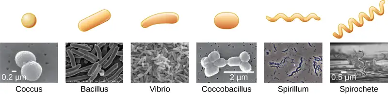
They have a wide range of metabolic capabilities and can grow in a variety of environments, using different combinations of nutrients. Some bacteria are photosynthetic, such as oxygenic cyanobacteria and anoxygenic green sulfur and green nonsulfur bacteria; these bacteria use energy derived from sunlight, and fix carbon dioxide for growth. Other types of bacteria are nonphotosynthetic, obtaining their energy from organic or inorganic compounds in their environment.
Archaea are also unicellular prokaryotic organisms. Archaea and bacteria have different evolutionary histories, as well as significant differences in genetics, metabolic pathways, and the composition of their cell walls and membranes. Unlike most bacteria, archaeal cell walls do not contain peptidoglycan, but their cell walls are often composed of a similar substance called pseudopeptidoglycan. Like bacteria, archaea are found in nearly every habitat on earth, even extreme environments that are very cold, very hot, very basic, or very acidic (Figure 1.14). Some archaea live in the human body, but none have been shown to be human pathogens.
Check Your Understanding
- What are the two main types of prokaryotic organisms?
- Name some of the defining characteristics of each type.
Eukaryotic Microorganisms¶
The domain Eukarya contains all eukaryotes, including uni- or multicellular eukaryotes such as protists, fungi, plants, and animals. The major defining characteristic of eukaryotes is that their cells contain a nucleus.
Protists¶
Protists are an informal grouping of eukaryotes that are not plants, animals, or fungi. Some algae are protists and others are bacteria; all protozoa are examples of protists.
Algae (singular: alga) are mostly made up of protists that can be either unicellular or multicellular and vary widely in size, appearance, and habitat (Figure 1.15). Algal protists are surrounded by cell walls made of cellulose, a type of carbohydrate. Algae are photosynthetic organisms that extract energy from the sun and release oxygen and carbohydrates into their environment. Cyanobacteria, a type of bacteria, is also considered an algae, but these organisms are bacterial prokaryotes and therefore have a peptidoglycan-based cell wall, unlike the cellulose-based cell wall of the algal protists. Because other organisms can use the waste products of all algae for energy, algae are important parts of many ecosystems. Many consumer products contain ingredients derived from algae, such as carrageenan or alginic acid, which are found in some brands of ice cream, salad dressing, beverages, lipstick, and toothpaste. A derivative of algae also plays a prominent role in the microbiology laboratory. Agar, a gel derived from algae, can be mixed with various nutrients and used to grow microorganisms in a Petri dish. Algae are also being developed as a possible source for biofuels.
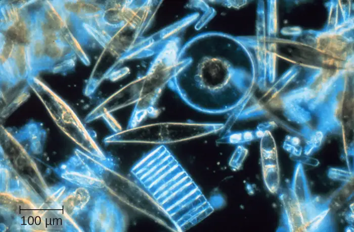
Protozoa (singular: protozoan) are protists that make up the backbone of many food webs by providing nutrients for other organisms. Protozoa are very diverse. Some protozoa move with help from hair-like structures called cilia or whip-like structures called flagella. Others extend part of their cell membrane and cytoplasm to propel themselves forward. These cytoplasmic extensions are called pseudopods (“false feet”). Some protozoa are photosynthetic; others feed on organic material. Some are free-living, whereas others are parasitic, only able to survive by extracting nutrients from a host organism. Most protozoa are harmless, but some are pathogens that can cause disease in animals or humans (Figure 1.16).
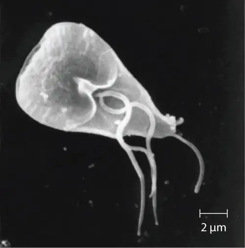
Fungi¶
Fungi (singular: fungus) are also eukaryotes. Some multicellular fungi, such as mushrooms, resemble plants, but they are actually quite different. Fungi are not photosynthetic, and their cell walls are usually made out of chitin rather than cellulose.
Unicellular fungi—yeasts—are included within the study of microbiology. There are more than 1000 known species. Yeasts are found in many different environments, from the deep sea to the human navel. Some yeasts have beneficial uses, such as causing bread to rise and beverages to ferment; but yeasts can also cause food to spoil. Some even cause diseases, such as vaginal yeast infections and oral thrush (Figure 1.17).
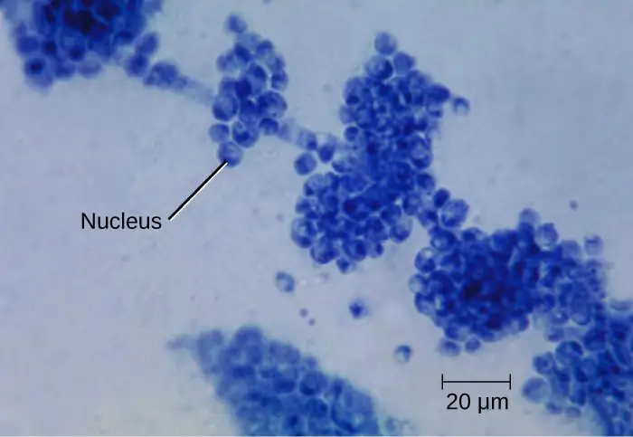
Other fungi of interest to microbiologists are multicellular organisms called molds. Molds are made up of long filaments that form visible colonies (Figure 1.18). Molds are found in many different environments, from soil to rotting food to dank bathroom corners. Molds play a critical role in the decomposition of dead plants and animals. Some molds can cause allergies, and others produce disease-causing metabolites called mycotoxins. Molds have been used to make pharmaceuticals, including penicillin, which is one of the most commonly prescribed antibiotics, and cyclosporine, used to prevent organ rejection following a transplant.
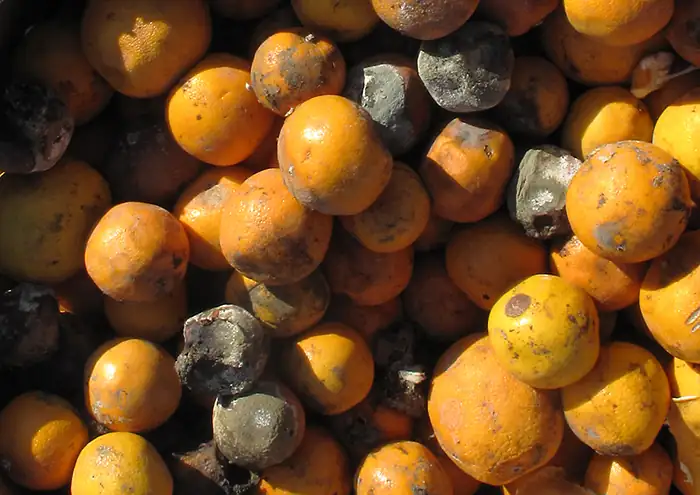
Check Your Understanding
- Name two types of protists and two types of fungi.
- Name some of the defining characteristics of each type.
Helminths¶
Multicellular parasitic worms called helminths are not technically microorganisms, as most are large enough to see without a microscope. However, these worms fall within the field of microbiology because diseases caused by helminths involve microscopic eggs and larvae. One example of a helminth is the guinea worm, or Dracunculus medinensis, which causes dizziness, vomiting, diarrhea, and painful ulcers on the legs and feet when the worm works its way out of the skin (Figure 1.19). Infection typically occurs after a person drinks water containing water fleas infected by guinea-worm larvae. In the mid-1980s, there were an estimated 3.5 million cases of guinea-worm disease, but the disease has been largely eradicated. In 2014, there were only 126 cases reported, thanks to the coordinated efforts of the World Health Organization (WHO) and other groups committed to improvements in drinking water sanitation.1011
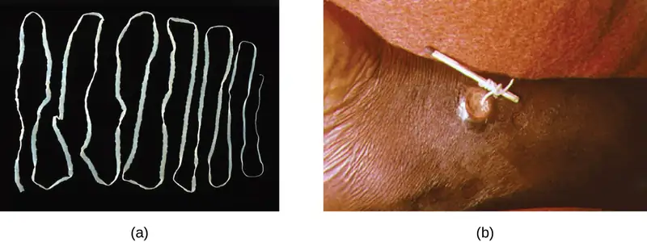
Viruses¶
Viruses are acellular microorganisms, which means they are not composed of cells. Essentially, a virus consists of proteins and genetic material—either DNA or RNA, but never both—that are inert outside of a host organism. However, by incorporating themselves into a host cell, viruses are able to co-opt the host’s cellular mechanisms to multiply and infect other hosts.
Viruses can infect all types of cells, from human cells to the cells of other microorganisms. In humans, viruses are responsible for numerous diseases, from the common cold to deadly Ebola (Figure 1.20). However, many viruses do not cause disease.
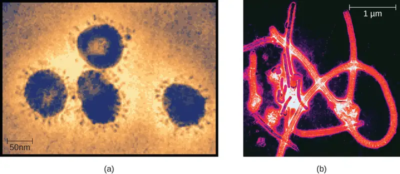
Check Your Understanding
- Are helminths microorganisms? Explain why or why not.
- How are viruses different from other microorganisms?
Microbiology as a Field of Study¶
Microbiology is a broad term that encompasses the study of all different types of microorganisms. But in practice, microbiologists tend to specialize in one of several subfields. For example, bacteriology is the study of bacteria; mycology is the study of fungi; protozoology is the study of protozoa; parasitology is the study of helminths and other parasites; and virology is the study of viruses (Figure 1.21). Immunology, the study of the immune system, is often included in the study of microbiology because host–pathogen interactions are central to our understanding of infectious disease processes. Microbiologists can also specialize in certain areas of microbiology, such as clinical microbiology, environmental microbiology, applied microbiology, or food microbiology.
In this textbook, we are primarily concerned with clinical applications of microbiology, but since the various subfields of microbiology are highly interrelated, we will often discuss applications that are not strictly clinical.
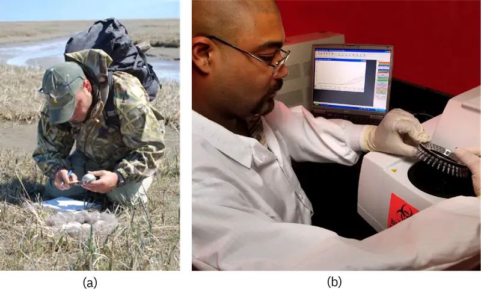
Eye on Ethics: Bioethics in Microbiology
In the 1940s, the U.S. government was looking for a solution to a medical problem: the prevalence of sexually transmitted diseases (STDs) among soldiers. Several now-infamous government-funded studies used human subjects to research common STDs and treatments. In one such study, American researchers intentionally exposed more than 1300 human subjects in Guatemala to syphilis, gonorrhea, and chancroid to determine the ability of penicillin and other antibiotics to combat these diseases. Subjects of the study included Guatemalan soldiers, prisoners, prostitutes, and psychiatric patients—none of whom were informed that they were taking part in the study. Researchers exposed subjects to STDs by various methods, from facilitating intercourse with infected prostitutes to inoculating subjects with the bacteria known to cause the diseases. This latter method involved making a small wound on the subject’s genitals or elsewhere on the body, and then putting bacteria directly into the wound.12 In 2011, a U.S. government commission tasked with investigating the experiment revealed that only some of the subjects were treated with penicillin, and 83 subjects died by 1953, likely as a result of the study.13
Unfortunately, this is one of many horrific examples of microbiology experiments that have violated basic ethical standards. Even if this study had led to a life-saving medical breakthrough (it did not), few would argue that its methods were ethically sound or morally justifiable. But not every case is so clear cut. Professionals working in clinical settings are frequently confronted with ethical dilemmas, such as working with patients who decline a vaccine or life-saving blood transfusion. These are just two examples of life-and-death decisions that may intersect with the religious and philosophical beliefs of both the patient and the health-care professional.
No matter how noble the goal, microbiology studies and clinical practice must be guided by a certain set of ethical principles. Studies must be done with integrity. Patients and research subjects provide informed consent (not only agreeing to be treated or studied but demonstrating an understanding of the purpose of the study and any risks involved). Patients’ rights must be respected. Procedures must be approved by an institutional review board. When working with patients, accurate record-keeping, honest communication, and confidentiality are paramount. Animals used for research must be treated humanely, and all protocols must be approved by an institutional animal care and use committee. These are just a few of the ethical principles explored in the Eye on Ethics boxes throughout this book.
Clinical Focus: Resolution
Cora’s CSF samples show no signs of inflammation or infection, as would be expected with a viral infection. However, there is a high concentration of a particular protein, 14-3-3 protein, in her CSF. An electroencephalogram (EEG) of her brain function is also abnormal. The EEG resembles that of a patient with a neurodegenerative disease like Alzheimer’s or Huntington’s, but Cora’s rapid cognitive decline is not consistent with either of these. Instead, her doctor concludes that Cora has Creutzfeldt-Jakob disease (CJD), a type of transmissible spongiform encephalopathy (TSE).
CJD is an extremely rare disease, with only about 300 cases in the United States each year. It is not caused by a bacterium, fungus, or virus, but rather by prions—which do not fit neatly into any particular category of microbe. Like viruses, prions are not found on the tree of life because they are acellular. Prions are extremely small, about one-tenth the size of a typical virus. They contain no genetic material and are composed solely of a type of abnormal protein.
CJD can have several different causes. It can be acquired through exposure to the brain or nervous-system tissue of an infected person or animal. Consuming meat from an infected animal is one way such exposure can occur. There have also been rare cases of exposure to CJD through contact with contaminated surgical equipment14 and from cornea and growth-hormone donors who unknowingly had CJD.1516 In rare cases, the disease results from a specific genetic mutation that can sometimes be hereditary. However, in approximately 85% of patients with CJD, the cause of the disease is spontaneous (or sporadic) and has no identifiable cause.17 Based on her symptoms and their rapid progression, Cora is diagnosed with sporadic CJD.
Unfortunately for Cora, CJD is a fatal disease for which there is no approved treatment. Approximately 90% of patients die within 1 year of diagnosis.18 Her doctors focus on limiting her pain and cognitive symptoms as her disease progresses. Eight months later, Cora dies. Her CJD diagnosis is confirmed with a brain autopsy.
Go back to the previous Clinical Focus box.
Chapter Review¶
Key Concepts and Summary¶
1.1 What Our Ancestors Knew¶
- Microorganisms (or microbes) are living organisms that are generally too small to be seen without a microscope.
- Throughout history, humans have used microbes to make fermented foods such as beer, bread, cheese, and wine.
- Long before the invention of the microscope, some people theorized that infection and disease were spread by living things that were too small to be seen. They also correctly intuited certain principles regarding the spread of disease and immunity.
- Antonie van Leeuwenhoek, using a microscope, was the first to actually describe observations of bacteria, in 1675.
- During the Golden Age of Microbiology (1857–1914), microbiologists, including Louis Pasteur and Robert Koch, discovered many new connections between the fields of microbiology and medicine.
1.2 A Systematic Approach¶
- Carolus Linnaeus developed a taxonomic system for categorizing organisms into related groups.
- Binomial nomenclature assigns organisms Latinized scientific names with a genus and species designation.
- A phylogenetic tree is a way of showing how different organisms are thought to be related to one another from an evolutionary standpoint.
- The first phylogenetic tree contained kingdoms for plants and animals; Ernst Haeckel proposed adding kingdom for protists.
- Robert Whittaker’s tree contained five kingdoms: Animalia, Plantae, Protista, Fungi, and Monera.
- Carl Woese used small subunit ribosomal RNA to create a phylogenetic tree that groups organisms into three domains based on their genetic similarity.
- Bergey’s manuals of determinative and systemic bacteriology are the standard references for identifying and classifying bacteria, respectively.
- Bacteria can be identified through biochemical tests, DNA/RNA analysis, and serological testing methods.
1.3 Types of Microorganisms¶
- Microorganisms are very diverse and are found in all three domains of life: Archaea, Bacteria, and Eukarya.
- Archaea and bacteria are classified as prokaryotes because they lack a cellular nucleus. Archaea differ from bacteria in evolutionary history, genetics, metabolic pathways, and cell wall and membrane composition.
- Archaea inhabit nearly every environment on earth, but no archaea have been identified as human pathogens.
- Eukaryotes studied in microbiology include algae, protozoa, fungi, and helminths.
- Algae are plant-like organisms that can be either unicellular or multicellular, and derive energy via photosynthesis.
- Protozoa are unicellular organisms with complex cell structures; most are motile.
- Microscopic fungi include molds and yeasts.
- Helminths are multicellular parasitic worms. They are included in the field of microbiology because their eggs and larvae are often microscopic.
- Viruses are acellular microorganisms that require a host to reproduce.
- The field of microbiology is extremely broad. Microbiologists typically specialize in one of many subfields, but all health professionals need a solid foundation in clinical microbiology.
Multiple Choice¶
1.1 What Our Ancestors Knew¶
1. Which of the following foods is NOT made by fermentation?
- beer
- bread
- cheese
- orange juice
Answer
D
2. Who is considered the “father of Western medicine”?
- Marcus Terentius Varro
- Thucydides
- Antonie van Leeuwenhoek
- Hippocrates
Answer
D
3. Who was the first to observe “animalcules” under the microscope?
- Antonie van Leeuwenhoek
- Ötzi the Iceman
- Marcus Terentius Varro
- Robert Koch
Answer
A
4. Who proposed that swamps might harbor tiny, disease-causing animals too small to see?
- Thucydides
- Marcus Terentius Varro
- Hippocrates
- Louis Pasteur
Answer
B
1.2 A Systematic Approach¶
5. Which of the following was NOT a kingdom in Linnaeus’s taxonomy?
- animal
- mineral
- protist
- plant
Answer
C
6. Which of the following is a correct usage of binomial nomenclature?
- Homo Sapiens
- homo sapiens
- Homo sapiens
- Homo Sapiens
Answer
C
7. Which scientist proposed adding a kingdom for protists?
- Carolus Linnaeus
- Carl Woese
- Robert Whittaker
- Ernst Haeckel
Answer
D
8. Which of the following is NOT a domain in Woese and Fox’s phylogenetic tree?
- Plantae
- Bacteria
- Archaea
- Eukarya
Answer
A
9. Which of the following is the standard resource for identifying bacteria?
- Systema Naturae
- Bergey’s Manual of Determinative Bacteriology
- Woese and Fox’s phylogenetic tree
- Haeckel’s General Morphology of Organisms
Answer
B
1.3 Types of Microorganisms¶
10. Which of the following types of microorganisms is photosynthetic?
- yeast
- virus
- helminth
- alga
Answer
D
11. Which of the following is a prokaryotic microorganism?
- helminth
- protozoan
- cyanobacterium
- mold
Answer
C
12. Which of the following is acellular?
- virus
- bacterium
- fungus
- protozoan
Answer
A
13. Which of the following is a type of fungal microorganism?
- bacterium
- protozoan
- alga
- yeast
Answer
D
14. Which of the following is not a subfield of microbiology?
- bacteriology
- botany
- clinical microbiology
- virology
Answer
B
Fill in the Blank¶
1.1 What Our Ancestors Knew¶
15. Thucydides is known as the father of _______________.
Answer
scientific history
16. Researchers think that Ötzi the Iceman may have been infected with _____ disease.
Answer
Lyme
17. The process by which microbes turn grape juice into wine is called _______________.
Answer
fermentation
1.2 A Systematic Approach¶
18. In binomial nomenclature, an organism’s scientific name includes its ________ and __________.
Answer
genus, species
19. Haeckel proposed adding the kingdoms ________ and ________ to his phylogenetic tree.
Answer
Protista and Monera
20. __________ are organisms without membrane-bound nuclei.
Answer
Prokaryotes
21. ______ are microorganisms that are not included in phylogenetic trees because they are acellular.
Answer
Viruses
1.3 Types of Microorganisms¶
22. A ________ is a disease-causing microorganism.
Answer
pathogen
23. Multicellular parasitic worms studied by microbiologists are called ___________.
Answer
helminths
24. The study of viruses is ___________.
Answer
virology
25. The cells of prokaryotic organisms lack a _______.
Answer
nucleus
Short Answer¶
1.1 What Our Ancestors Knew¶
26. What did Thucydides learn by observing the Athenian plague?
27. Why was the invention of the microscope important for microbiology?
28. What are some ways people use microbes?
1.2 A Systematic Approach¶
29. What is a phylogenetic tree?
30. Which of the five kingdoms in Whittaker’s phylogenetic tree are prokaryotic, and which are eukaryotic?
31. What molecule did Woese and Fox use to construct their phylogenetic tree?
32. Name some techniques that can be used to identify and differentiate species of bacteria.
1.3 Types of Microorganisms¶
33. Describe the differences between bacteria and archaea.
34. Name three structures that various protozoa use for locomotion.
35. Describe the actual and relative sizes of a virus, a bacterium, and a plant or animal cell.
Critical Thinking¶
1.1 What Our Ancestors Knew¶
36. Explain how the discovery of fermented foods likely benefited our ancestors.
37. What evidence would you use to support this statement: Ancient people thought that disease was transmitted by things they could not see.
1.2 A Systematic Approach¶
38. Why is using binomial nomenclature more useful than using common names?
39. Label the three Domains found on modern phylogenetic trees.
![The phylogenetic Tree of Life. A drawing of branching lines. The central line at the bottom branches into two main branches. On the left branch is a purple branch that contains the following sub-branches: Green filamentous bacteria, Gram positives, Cyanobacteria, Proteobacteria, and Spirocheres. The branch to the right subdivides into a red and a brown branch. The brown branch contains the following sub-branches: Smile molds, Plants, Fungi and Animals. The red branch contains the following sub-branches: Thermoproteus, Methanococcus, Methanobacterium, and Halophiles.](img/osc-microbio-01-02-treeartcon-img.webp)
1.3 Types of Microorganisms¶
40. Contrast the behavior of a virus outside versus inside a cell.
41. Where would a virus, bacterium, animal cell, and a prion belong on this chart?
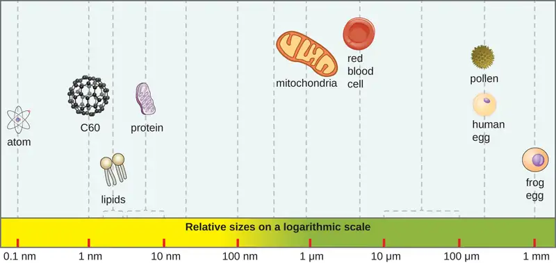
Adapted from Microbiology by OpenStax, licensed under CC BY 4.0. Access the original for free at openstax.org. Changes: converted to the web reading format of The Open Book Project.
-
J. Hulcr et al. “A Jungle in There: Bacteria in Belly Buttons are Highly Diverse, but Predictable.” PLoS ONE 7 no. 11 (2012): e47712. doi:10.1371/journal.pone.0047712. ↩
-
Rebecca Buxton. “Examination of Gram Stains of Spinal Fluid—Bacterial Meningitis.” American Society for Microbiology. 2007. http://www.microbelibrary.org/library/gram-stain/3065-examination-of-gram-stains-of-spinal-fluid-bacterial-meningitis ↩
-
P.E. McGovern et al. “Fermented Beverages of Pre- and Proto-Historic China.” Proceedings of the National Academy of Sciences of the United States of America 1 no. 51 (2004):17593–17598. doi:10.1073/pnas.0407921102. ↩
-
A. Keller et al. “New Insights into the Tyrolean Iceman's Origin and Phenotype as Inferred by Whole-Genome Sequencing.” Nature Communications, 3 (2012): 698. doi:10.1038/ncomms1701. ↩
-
Capasso, L. “5300 Years Ago, the Ice Man Used Natural Laxatives and Antibiotics.” Lancet (London, England) vol. 352,9143 (1998): 1864. doi:10.1016/S0140-6736(05)79939-6 ↩
-
G. Pappas et al. “Insights Into Infectious Disease in the Era of Hippocrates.” International Journal of Infectious Diseases 12 (2008) 4:347–350. doi: http://dx.doi.org/10.1016/j.ijid.2007.11.003. ↩
-
Thucydides. The History of the Peloponnesian War. The Second Book. 431 BC. Translated by Richard Crawley. http://classics.mit.edu/Thucydides/pelopwar.2.second.html. ↩
-
Plinio Prioreschi. A History of Medicine: Roman Medicine. Lewiston, NY: Edwin Mellen Press, 1998: p. 215. ↩
-
S.M. Blevins and M.S. Bronze. “Robert Koch and the ‘Golden Age’ of Bacteriology.” International Journal of Infectious Diseases. 14 no. 9 (2010): e744-e751. doi:10.1016/j.ijid.2009.12.003. ↩
-
C. Greenaway “Dracunculiasis (Guinea Worm Disease).” Canadian Medical Association Journal 170 no. 4 (2004):495–500. ↩
-
World Health Organization. “Dracunculiasis (Guinea-Worm Disease).” WHO. 2015. http://www.who.int/mediacentre/factsheets/fs359/en/. Accessed October 2, 2015. ↩
-
Kara Rogers. “Guatemala Syphilis Experiment: American Medical Research Project”. Encylopaedia Britannica. http://www.britannica.com/event/Guatemala-syphilis-experiment. Accessed June 24, 2015. ↩
-
Susan Donaldson James. “Syphilis Experiments Shock, But So Do Third-World Drug Trials.” ABC World News. August 30, 2011. http://abcnews.go.com/Health/guatemala-syphilis-experiments-shock-us-drug-trials-exploit/story?id=14414902. Accessed June 24, 2015. ↩
-
Greg Botelho. “Case of Creutzfeldt-Jakob Disease Confirmed in New Hampshire.” CNN. 2013. http://www.cnn.com/2013/09/20/health/creutzfeldt-jakob-brain-disease/. ↩
-
P. Rudge et al. “Iatrogenic CJD Due to Pituitary-Derived Growth Hormone With Genetically Determined Incubation Times of Up to 40 Years.” Brain 138 no. 11 (2015): 3386–3399. ↩
-
J.G. Heckmann et al. “Transmission of Creutzfeldt-Jakob Disease via a Corneal Transplant.” Journal of Neurology, Neurosurgery & Psychiatry 63 no. 3 (1997): 388–390. ↩
-
National Institute of Neurological Disorders and Stroke. “Creutzfeldt-Jakob Disease Fact Sheet.” NIH. 2015. http://www.ninds.nih.gov/disorders/cjd/detail_cjd.htm#288133058. ↩
-
National Institute of Neurological Disorders and Stroke. “Creutzfeldt-Jakob Disease Fact Sheet.” NIH. 2015. http://www.ninds.nih.gov/disorders/cjd/detail_cjd.htm#288133058. Accessed June 22, 2015. ↩